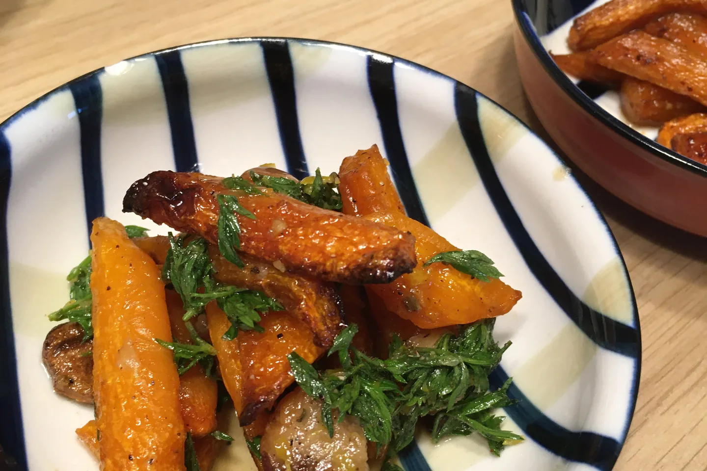
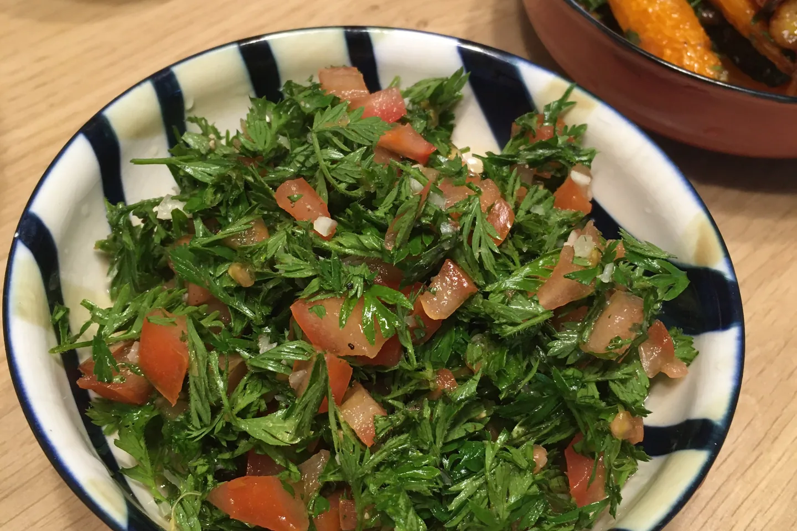
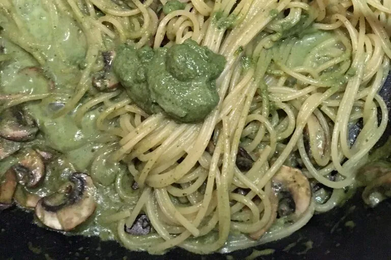
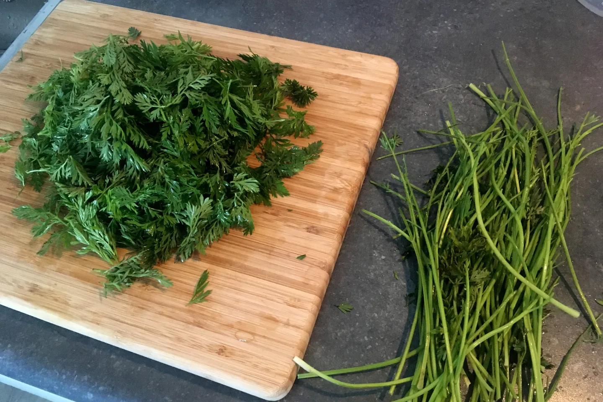

Daily Life | にんじんの葉を使いきる料理
今回の料理の目標は、「おいしい！ そして、この緑の葉っぱの味でも、誰でも気軽に受け入れられる」ことです。ただ一品作って、食材を使いきったことを自慢するのではなく、一緒に食べる家族の食の好みの違いも、気にかけました。
その1：調味料として、ローストにんじんと一緒に
「ローストにんじん」は、よくある洋風の付け合わせ（サイドディッシュ）です。バルサミコ酢、はちみつ、オリーブオイルを2：2：1で、塩とこしょうを適量加えてよく混ぜ、200度で30〜40分ローストします。途中でにんじんを見て、ひっくり返します。ポイントは、表面を焦がすこと。調味料の量とローストの時間は、にんじんの量と大きさによって変わります。私は、フォークが簡単に通るくらい、ほくほくに柔らかいのが好きです。家族は、はちみつ味のさつまいもみたいだと言いました！
にんじんの葉を加える作り方は、NOT ANOTHER COOKING SHOWを参考にしたアレンジです。まず、にんじんを、オリーブオイル、にんにく（皮つき）、タイム、塩、こしょうと混ぜてローストします。次に、オリーブオイル、レモン汁、はちみつを2：2：1で、刻んだレモンの皮、刻んだにんじんの葉（茎は使いません）、パセリ、塩、こしょうと混ぜて、焼きたてのにんじんにかければ完成です。
さっきの一品に比べると、こちらは前菜（アペタイザー）タイプで、個性が強くて、親しみやすさは控えめです。緑の葉とレモンを基調にしたさっぱりした味は、大人にしか楽しめないようで、脇役のひとつとしてのにんじんの葉は、大人なら簡単に受け入れてもらえると思います。

その2：にんじんの葉のサラダ（失敗）
YouTubeで適当に検索したレシピです。にんじんの葉（茎は除く）、トマト、にんにくを刻んで、塩、こしょう、レモンとオレンジの果汁（柑橘ならなんでもOK）で和えれば、手軽に出せる生野菜のサラダです！
まず、みじん切りのにんにくは辛すぎるので、何があってもこの材料は抜いてください。ほかの部分はとてもシンプルで、基本的にはレモンやオレンジの果汁がベースのサラダです。にんじんの葉の味がまったく隠れていないので、「草っぽさ」が苦手な人は、このサラダの前では三歩下がってしまいます。たいていの人は、受け入れられないと思います……
サラダは、食材そのものの味を見せる料理だと私は思っていて、凡人の私には、食材の味がしないサラダは作れません（そんなことをしたら、本末転倒になってしまう気もするし）。いろいろな「草っぽさ」を楽しめる人、試してみる気のある人は、ぜひ作ってみてください。ふだん、にんじんの葉を食べる機会はあまりないので、きっと、ちがう生野菜の体験になると思います。

その3：ペスト（ジェノベーゼ風）、使いきり技の最優秀賞
レシピは、LOVE&LEMONSを参考にしました。定番のバジルと松の実のほかに、ペストのベースになる材料の代わりが、いろいろな葉っぱやナッツまでたくさん紹介されていて、とても役に立つ記事です。
私は、にんじんの葉、オリーブオイル（ミキサーが回らなくて、たくさん入れました）、みじん切りのにんにく、カシューナッツ、アーモンドを入れました。にんじんの葉は、ペストの中で浮いておらず、ほかの材料で香りが少し弱まったのかもしれません。サラダのドレッシングとして和えてみましたが、プラスにもマイナスにもならず、ちょっと退屈でした。
何度か試したうえで、おすすめは加熱して食べることです。加熱すると、にんにくの香りがはっきり立って、主役になります。スライスしたバゲットに塗るのがぴったりで（私はさらにバターも少し足します。ものすごく太るけど最高です）、パスタのソースにすれば、まったく問題なし。定番のバジルのペストと比べても、本物と見まちがえるほどで、にんじんの葉を使いきる第一候補になります！


おわりに
- レシピを調べて、作り始めてから気づいたのですが、ほとんどのレシピは葉だけを使って、茎は使っていませんでした。
- この記事は、オランダで実践したものです。得意げに記録し終えてから、台湾で買うにんじんは、ふつう葉がついていないことに気づきました（輸入だからなのか、収穫後の習慣なのか、わかりません）。品種も違い、茎や葉も太いので、台湾のにんじんで試すのは、志のある方におまかせします XD！